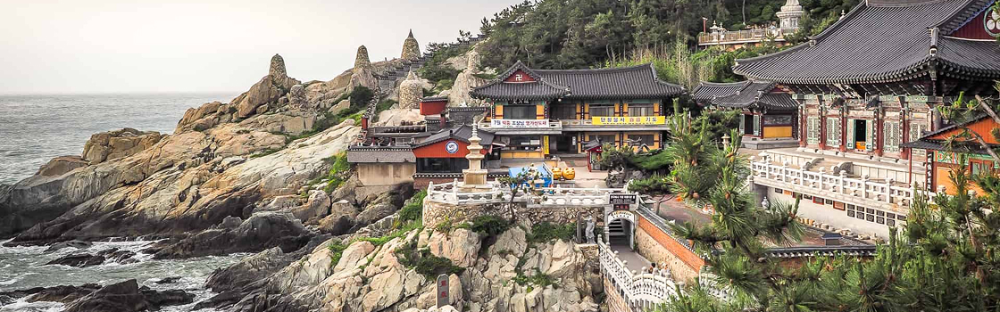
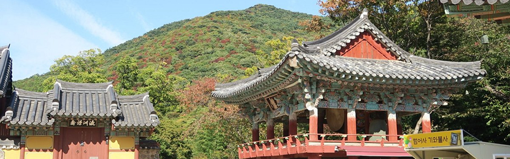
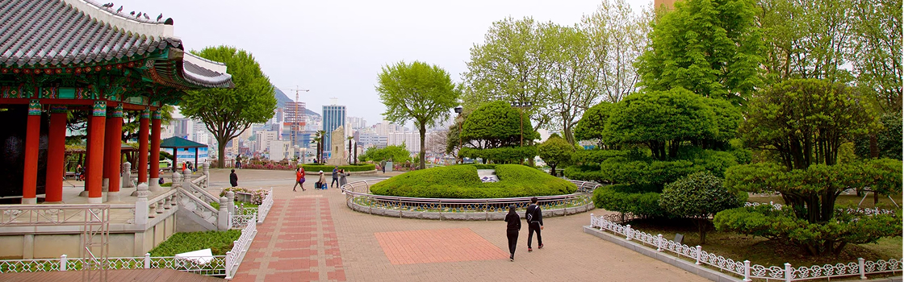

Busan, a estrela em ascensão da Coreia do Sul, oferece de tudo, desde churrascarias de primeira linha até
tradicionais barracas de comida de rua. Aqui, exploramos a segunda cidade da Coreia do Sul e descobrimos
as suas ofertas culinárias.
Para os amantes de história
Descubra 3 destinos imperdíveis em Busan
As atrações de Busan vão desde templos budistas centenários que pontilham as montanhas e o litoral da cidade
até praias imaculadas com águas cristalinas. Esta cidade litorânea tem muitas coisas para fazer o ano todo -
as famílias podem passar o tempo em um aquário à beira-mar, os compradores podem explorar bairros vibrantes
e os amantes da natureza podem desfrutar de longas caminhadas até mirantes panorâmicos.
Os santuários budistas que pontilham a costa e as montanhas de Busan têm uma arquitetura impressionante que
irá encantar os fotógrafos.

1. Templo Haedong Yonggungsa
O Templo Haedong Yonggungsa é um templo budista localizado no extremo nordeste de Busan. Construído em
1376, é um dos poucos templos na Coreia construídos à beira-mar – você pode desfrutar de vistas do Mar do
Leste de um lado e de belas montanhas do outro.
Bom para:
História

2. Templo Beomeo-sa
O Templo Beomeo-sa é um dos maiores santuários da Coreia do Sul. Ele está localizado no alto da borda
leste da montanha Geumjeongsa e fica distante da agitação da cidade. O Daeungjeon Hall do templo é um
exemplo bem preservado da arquitetura da Dinastia Joseon.
Bom para:
História

3. Parque Yongdusan
O Parque Yongdusan, localizado no centro de Busan, abriga alguns dos monumentos mais importantes da
cidade. Você pode ver vistas espetaculares do topo da Torre Busan, de 120 metros de altura. O parque tem 2
museus – confira os instrumentos musicais tradicionais no Museum of World Folk Instruments e mais de 80
veleiros coreanos no Exhibition Hall of World Model Boats.
Bom para:
CasaisFamíliasOrçamento
As melhores coisas para fazer em Busan mostram a reputação da cidade como um importante porto marítimo na
Ásia. Frequentemente vista como a essência da Coreia do Sul, você experimentará uma atmosfera única em termos
de diversidade étnica e cultural, já que a cidade recebe um público cosmopolita o ano todo.